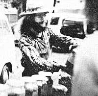
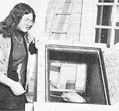
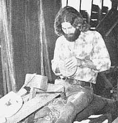

In celebration of little-known MOTHER-type folks all over.
Douglas Elliott-known simply as "the herb man" to many-makes his living selling, writing about, and drawing pictures of plants that most people take for granted . . . or never notice at all. Doug Elliott is an herbalist.
"I've always been interested in nature," Doug explains. "Even as a youngster, I could identify most all the birds, animals, and trees in the forest, although it wasn't until years later-as a struggling artist-homesteader in northern New Hampshire-that I got hold of a field manual and started in on wildflowers and roots."
Five years ago, Doug Elliott was invited to display his paintings at a folk festival . . . and he was asked to bring his herbs. "I figured it couldn't hurt," Doug says, "since my paintings rarely sold anyway. So I brought a few jars of mint, sassafras, Saint-John's-wort, and yarrow . . . and people really loved it! I actually made a little money, too. Five years later, I'm still selling my herbs at fairs and festivals . . . and getting a great response."
But can a person actually make enough money to live on just by selling herbs and herb products at craft shows and folk festivals? Elliott: "Yes! Of course, I live very minimally. I have `low overhead': just a vehicle to maintain, and I do most of the work on it myself. Also, I forage at least a portion of my diet. But I am getting some other plant related gigs together to supplement my present income."
The "gigs" Doug is referring to are the lectures and workshops he's been giving to East Coast college and high school (and other) groups. Doug is a superb wildlife photographer and has put together a series of outstanding slide-illustrated presentations . . . shows that-so far-have been extremely well received by his audiences.
Also, Doug has begun to write: He penned a piece entitled "Conscientious Herb Gathering" that appeared in MOTHER NO. 28, and-more recently-authored a book called Roots: An Underground Botany and Forager's Guide ($5.95 from your local bookstore or Mother's Bookshelf).
Douglas Elliott: artist, photographer, author, speaker, and herbalist par excellence.-Myrtle Berry.
Most 19-year-old girls can't get too excited about solar cookers, flat-plate collectors, and methane generators. But then, Julie Reynolds isn't like most 19-year-old girls.
Over the past two and a half years, Julie has built-or helped build-a "window-box" solar oven, a simple solar shower employing a thermosiphoning flat-plate collector hooked to a 30-gallon drum, and (as an apprentice at the integral Urban House in Berkeley) a solar-heated methane digester.
"I think we need to take a more wholistic approach to solving society's energy and other problems," Julie says. She doesn't just say, though . . . she does. In the past year, Julie helped found the Alternative Energy Cooperative, a San Francisco Bay Area nonprofit educational and research organization whose members are working to develop simple, inexpensive energy devices that anyone can use. In addition, Julie has written information sheets and booklets, and is putting together a magazine article about women and technology. (You may already have read her writing, if you saw her article on the Integral Urban House in MOTHER NO. 42. )
This year-after more than 18 months of research and writing-Julie will see her first book published, an as-yet-unnamed expose of agribusiness practices in which the Del Monte Corporation figures prominently. Along with this project, Ms. Reynolds has been working on a children's picture book about an ecologically sound culture that floats through the sky in a wind- and sun-powered blimp. And-as if these undertakings weren't enough to keep her busy-Julie has just been named Alternative Technology Editor of Seriatim (a quarterly journal covering the alternative lifestyles movement in the Pacific Northwest).
Know of any other 19-year-olds-male or female-doing so much to make Mother Earth a better place to live?- Allan Van Vleet.
Dennis Rule didn't graduate cum laude from the University of Tennessee with a degree in anthropology to become a cooper. Fact is, none of his courses involved crafts, folklore, or regional studies of any kind. So why does he now make his living sitting atop a shaving horse? "I'm deeply interested in the craft of coopering," he explains, "and I want to do what I can to preserve it."
The ancient art of coopering is virtually extinct now. There are probably fewer than 20 working coopers in the entire U.S., and of those, only one refuses to abandon the original methods used by coopers in the 1800's. This person is Alex Stewart, the nation's oldest working cooper . . . and Dennis Rule's instructor.
"Mr. Stewart is the reason I am a cooper," Dennis says. "I wanted to learn something about woodworking with hand tools, more for a hobby than anything else. When I mentioned 'hand tools' to someone, I was sent to Mr. Stewart. After spending one afternoon watching him, I was hooked!"
Dennis joined the aging craftsman at his Sneedville, Tennessee farm in the winter of 1975. "I wanted to learn the trade from the ground up, literally. Mr. Stewart taught me a lot about wood, especially the kinds of cedar that are best for vessels. While I was letting my first batch of good cedar season, I built my shaving horse, foot lathe, and tools. I spent days-weeks-just watching Mr. Stewart work and asking questions."
Dennis Rule has now set up shop at the Salt House in historic Jonesboro, Tennessee. In his spare moments, he appears at craft shows to exhibit his skills and sell his wares. "My exhibit has been enthusiastically received wherever I've gone," says Dennis. "Some people don't have any idea what I'm doing . . . others know what coopering is but have never seen it in progress. Everyone who stops and looks, however, seems genuinely interested in my methods as well as my products . . . and that-to me-is important."-Karen W. Carden.
Know someone-sung or unsung-who's doing something of merit in wholistic gardening, alternative energy, conservation, self-employment, low-cost house construction, or an other field of endeavor featured in MOTHER? A tact-filled 454 to 500-word essay describing that person and a sharp, glossy, black-and-white photo can-upon acceptance for use in PROFILES-earn you a fast, flat $50. Send pour contribution to: PROFILES Editor. THE Mother Earth News (restricted) , P.O. Box 70, Hendersonville, N. C. 28739.
|
 |
 |
 |